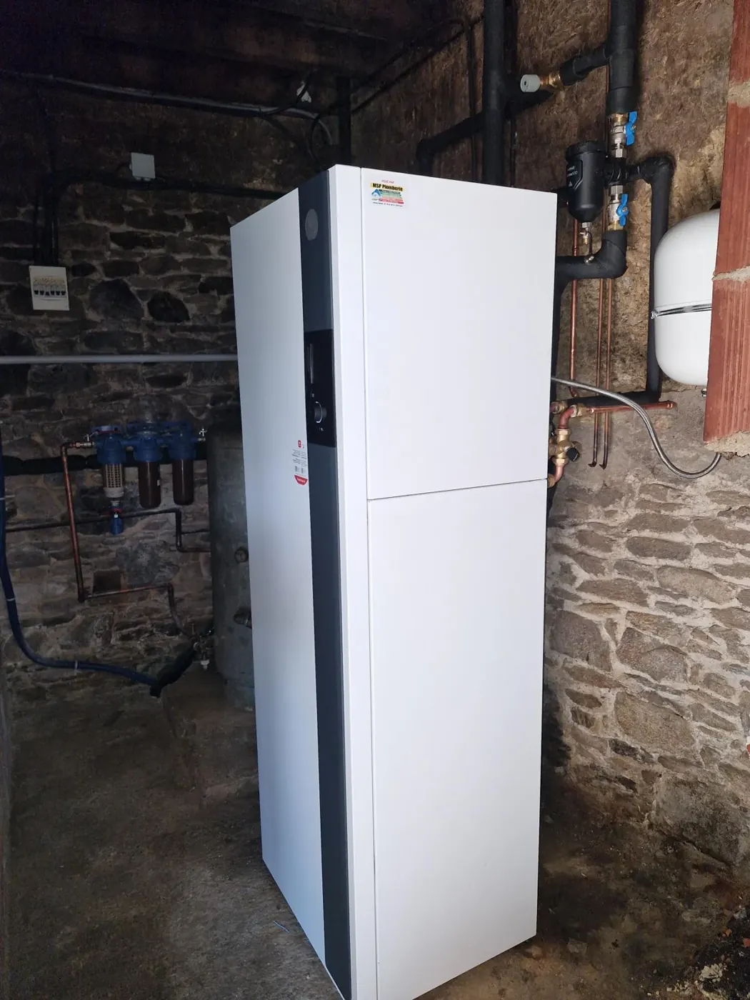
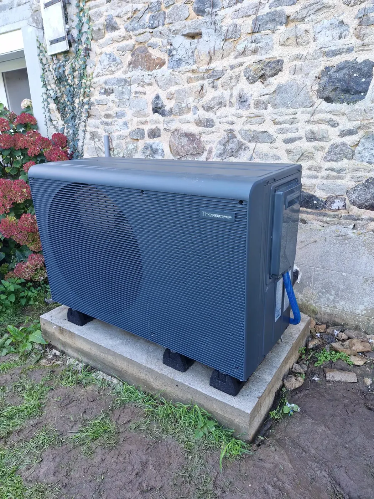
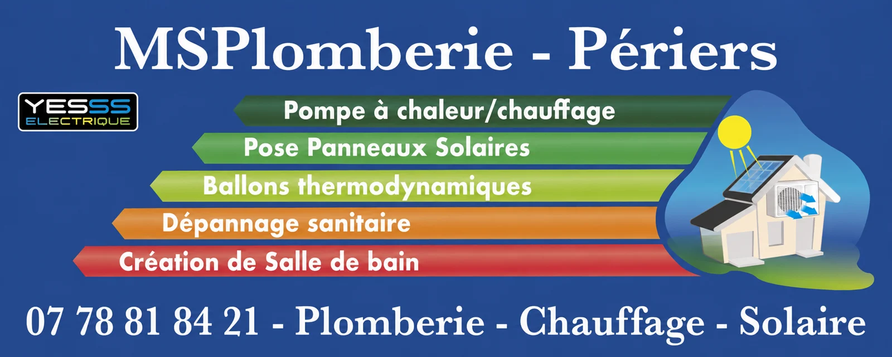
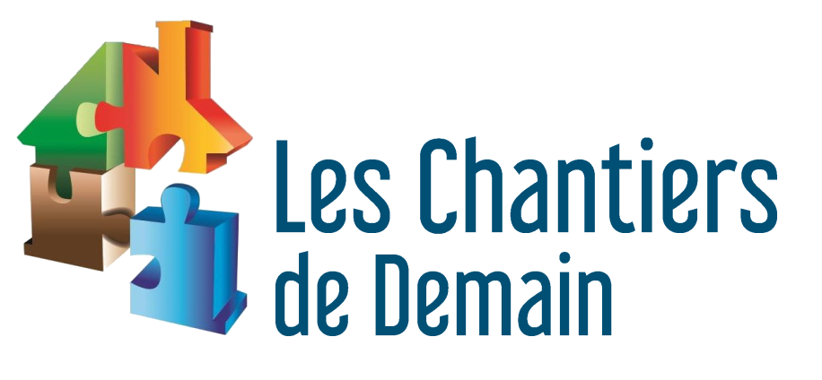

CHAUFFAGEChangez de chauffage.
Changez de chauffage.
Gardez le confort.
Installation de pompes à chaleur, étude de dimensionnement et remplacement de votre ancienne chaudière fioul ou gaz.
Étudier mon chauffagePLOMBIER-CHAUFFAGISTE À PÉRIERS
Pompe à chaleur, solaire, salle de bains.
Un artisan de proximité pour faire avancer
vos projets, de l’étude à l’installation.
Sébastien Mauger14 ans d’expérience · Votre interlocuteur direct

Étude de votre projet
Dimensionnement adapté
Installation & rénovation
Accompagnement aux démarches
01 / NOS SAVOIR-FAIRE
Du remplacement de votre chauffage à votre nouvelle salle de bains, des solutions pensées pour votre logement et votre quotidien.

Installation de pompes à chaleur, étude de dimensionnement et remplacement de votre ancienne chaudière fioul ou gaz.
Étudier mon chauffagePanneaux en toiture ou au sol, autoconsommation et batterie de stockage. Dimensionnement, étude de rentabilité et déclarations préalables en mairie.
Parler de mon projet solaireUne solution adaptée pour la production d’eau chaude de votre maison.
Sanitaires, douche, vasques et réseaux de plomberie pour votre nouvel espace.
Remplacement de chaudière et installation de chauffage au sol.
Rénovation des réseaux, création d’évacuations et dépannage de vos sanitaires.
UN PROJET, UN INTERLOCUTEUR
Sébastien étudie votre besoin et vous accompagne à chaque étape, avec un devis adapté à votre projet.
Décrire mon besoinQuelques informations et, si vous le souhaitez, des photos pour comprendre votre logement.
Échanges, rendez-vous et dimensionnement selon les besoins de votre installation.
Un devis, les démarches utiles et l’organisation des travaux. Pour le solaire en toiture, Sébastien s’appuie sur une entreprise de couverture.
02 / SUR LE TERRAIN
Une sélection de chantiers de msplomberie : des installations, des rénovations et les détails qui font partie du travail.

ans d’expérience
dans le métier
03 / VOTRE ARTISAN
Installé à Périers, Sébastien exerce le métier de plombier depuis 14 ans et a créé son activité il y a 5 ans. Il travaille principalement pour les particuliers, avec une attention portée à chaque projet de rénovation.
Il étudie les projets, organise les rendez-vous et réalise les installations. Un artisan impliqué, avec la volonté de trouver une solution adaptée et de satisfaire ses clients.

À VOS CÔTÉS, EN NORMANDIE
Déplacements dans la Manche et le Calvados selon le projet. Indiquez votre commune dans le formulaire pour préparer notre échange.

AVANT DE SE LANCER
Utilisez le formulaire en précisant votre commune, votre installation actuelle et ce que vous souhaitez faire. Quelques photos peuvent aider Sébastien à préparer sa réponse et un éventuel rendez-vous.
Sébastien étudie ce type de remplacement. La solution et son dimensionnement dépendent du logement, de ses besoins et de l’installation existante.
Sébastien réalise l’étude de dimensionnement et de rentabilité. Il prend aussi en charge les demandes de déclaration préalable en mairie pour la pose en toiture et fait intervenir une entreprise de couverture pour les travaux sur le toit.
Du lundi au vendredi, de 8 h à 12 h et de 13 h 30 à 17 h. L’entreprise ne travaille pas le samedi ni le dimanche. Le formulaire reste disponible pour décrire votre besoin.
04 / PARLONS DE VOTRE PROJET
Sur les chantiers, Sébastien n’est pas toujours disponible au téléphone. Privilégiez ce formulaire : il pourra prendre connaissance de votre projet et revenir vers vous.
Décrivez votre besoin, Sébastien vous répondra.